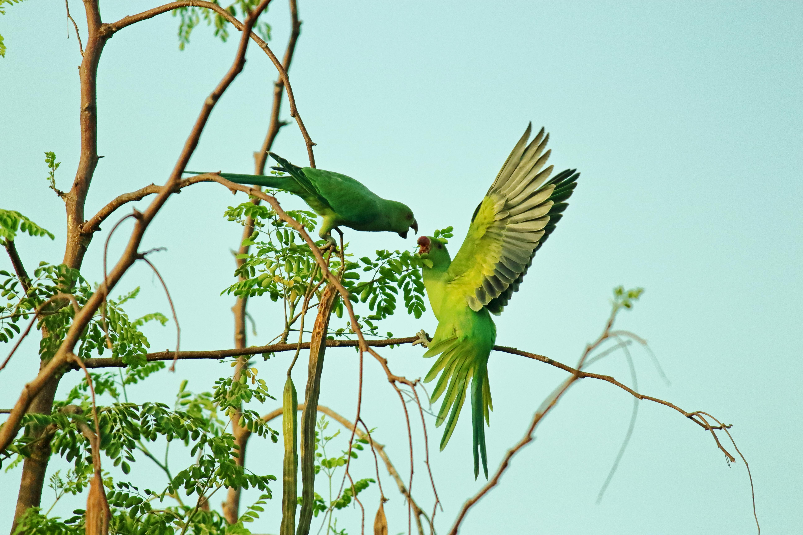

Dedicated to restoring nature in Central areas by encouraging birds and wildlife to thrive.
A simple guide to help you register, view posts, create posts, and manage your profile.
You can freely browse all posts on the View Post page without registering. All user submissions are publicly visible.
If you wish to publish your own content, visit the Register page and create your account.
After registering, log in through the Login page. Once logged in, your posting options become available.
Go to New Post and submit content. Your post will immediately appear on the View Post page alongside others.
Only you can modify or remove your posts. Visit your Profile to edit or delete your submissions.
We are a non-profit organization focused on creating awareness, conducting research, and building safer habitats for birds and wildlife across the region. Our mission is to reconnect people with nature and encourage biodiversity through sustainable environmental efforts.
Developing green spaces and nesting areas for urban bird species.
Reviving natural wetlands to support migratory and native birds.
Educating communities to protect and support local biodiversity.